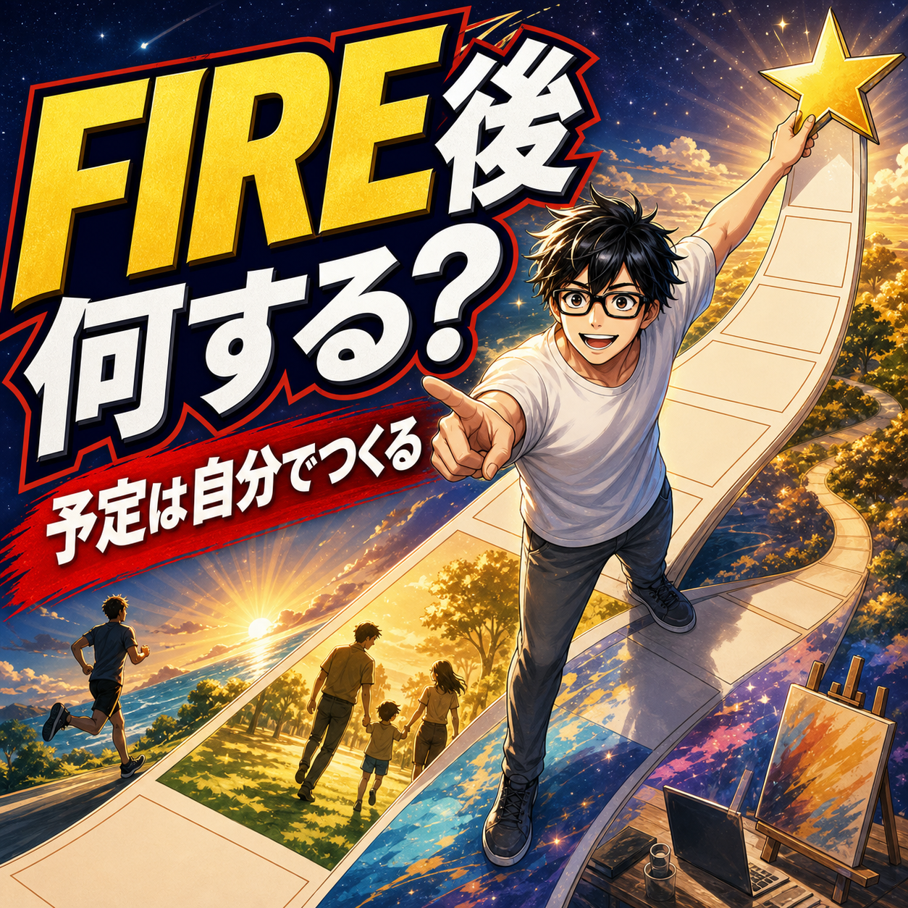

FIRE COLUMN
FIRE後は何をする？やることがない問題への向き合い方

.png) RELATED ARTICLE
FIRE後の10日間を振り返って、毎日を持て余さなかった理由
FIRE後の生活というと、長期旅行や高級な食事のような大きなイベントを想像しがちです。でも、自由になった日々を実際に支えているのは、古いフライパンを買い替えること、友人と昼食を食べること、子どもの薬を飲みやすくすることのような小さな判断です。
wakuwaku-fire-git.pages.dev ↗
RELATED ARTICLE
FIRE後の10日間を振り返って、毎日を持て余さなかった理由
FIRE後の生活というと、長期旅行や高級な食事のような大きなイベントを想像しがちです。でも、自由になった日々を実際に支えているのは、古いフライパンを買い替えること、友人と昼食を食べること、子どもの薬を飲みやすくすることのような小さな判断です。
wakuwaku-fire-git.pages.dev ↗
 COMMUNITY
FIREを本音で話せる場所
ワクワクFIRE道。FIREや自由な人生を目指す人が交流できるコミュニティ。
community.camp-fire.jp ↗
COMMUNITY
FIREを本音で話せる場所
ワクワクFIRE道。FIREや自由な人生を目指す人が交流できるコミュニティ。
community.camp-fire.jp ↗
FIRE後は何をするのか、やることがない問題にどう向き合うのか。家事育児、発信、散歩、コミュニティ、新しい挑戦を生活へ置いた経験から、自由の使い方を考えます。
まいど！ワクワクFIREのまるです。
「FIREしたら、毎日何をして過ごすんですか？」
これは本当によく聞かれる疑問です。会社員なら、朝起きて出勤して、仕事をして、帰って寝る。嫌でも一日の大半が埋まります。FIREすると、その大きな予定がなくなる。
僕も最初からやることが決まっていたわけではありません。むしろFIRE直後はゲームに偏り、昼前まで寝ることもあった。自由を手に入れたのに、自由を使う予定がない。ここが最初の壁でした。
FIRE後の予定表は、誰も作ってくれない
会社員時代は、予定が多いから忙しい。FIRE後は、予定がないから暇になる。そう考えがちですが、正確には「自分で予定を作らないと、一日が形にならない」です。
朝に起きる理由がない。締め切りがない。人と会う約束もない。そうなると、今日は何をしてもいいが、今日は何をすればいいか分からないへ変わります。
僕はこの状態を、その日暮らしのアリエッティと呼んでいました。朝起きてから「今日は散歩しながら何かするか」「動画を作るか」と決める。自由である一方、毎日これをやるのは意外と難しいんよな。
まずは生活を回すことが、立派なやることになる
FIRE後のやることというと、旅行や趣味、起業のような派手なものを想像しがちです。でも、生活を回すことも大切な仕事です。
僕は今、子どもの食事や送迎、買い物、夕食、寝かしつけ、家事を一日の軸にしています。子どもがいると予定表はすぐ崩れる。朝6時に起きるつもりが、もっと早く起こされることもある。
それでも、家族のために動く時間があると、日々の輪郭ははっきりします。資産額や収入にならなくても、誰かの生活を支える役割には価値がある。
午前・午後・夜に一つずつ軸を置く
最初から完璧な時間割を作る必要はありません。午前に一つ、午後に一つ、夜に一つ。三つの軸だけ決めてみる。
- 午前：家事、文章、動画など頭を使うこと
- 午後：散歩、外食、運動、人と会うこと
- 夜：家族との時間、友人、ゲームなど休むこと
毎日同じでなくていいです。子どもの予定で崩れても、翌日に戻せばいい。自由を守るためのルールは、守れない日があっても自分を責めない程度にゆるくしておくのがコツです。
発信や創作は、自由を形にしてくれる
FIRE後に会社を辞めたからこそ、文章やYouTubeへ時間を使えるようになりました。もちろん、毎回おもしろいものが作れるわけではない。書けない日もあるし、動画をサボる日もある。
それでも、頭の中にあることを外へ出すと、自分の生活が少し整理されます。経験を言葉にする。誰かに届く。反応を受けてまた考える。供給側へ回ると、時間がただ消費されるだけではなくなる。
「自分には何もない」と感じた時ほど、過去の失敗や迷いを材料にする。完璧な先生にならなくていい。自分が歩いた道を、後ろから来る人へ見せるだけでも発信になります。
人との約束が、自由に締め切りを作る
FIRE後の予定は、一人で完結させないほうが続きます。友人と通話する、コミュニティの勉強会へ参加する、家族と外食する。誰かとの約束があると、朝から動く理由が生まれる。
僕もコミュニティの運営を通じて、毎週のオンライン飲み会や勉強会を作りました。準備は面倒な時もあります。でも、誰かが来てくれると思うと、だらけたままではいられない。
会社のような強制力がなくても、選んだ責任は作れます。これがFIRE後の活動を続ける力になります。
やることは、最初から人生の使命でなくていい
FIRE後に何をするかで悩むと、「残りの人生をかける仕事」を探してしまいます。そんな大きな答え、すぐに見つからなくても普通です。
ラーメンを食べる。知らない道を歩く。パズルをする。配達を試す。短い文章を書く。小さな行動を一つやると、次の興味が生まれます。なんかおもろそう、で始めていい。
2026年のチャレンジでも、試した結果、続かなかったことはあります。でも、合わないと分かったのも前進です。やることは、発見しながら増やしていけばいい。
自由すぎるなら、自分で制約を置く
自由は多いほど良い、と単純には言えません。自由すぎると、どれから手をつけるか迷って止まる。僕は堕落した経験から、自ら制約を課す大切さを学びました。
一か月だけ毎朝散歩する。週に二回は誰かと話す。午前中はゲームをしない。月に一つ新しいことを試す。小さな制約なら、生活を縛るより動かす力になります。
やることの候補を、三つの箱に分ける
予定が決まらないときは、「自分を整えること」「誰かと関わること」「好奇心を満たすこと」の三つに分けると考えやすいです。散歩や睡眠は整えること。家族との食事やコミュニティは関わること。ゲームや文章、新しい場所は好奇心です。
一日に三つ全部をやらなくてもいい。今日は体を整える、明日は人と話す、週末は新しいことを試す。箱を複数持っておくと、ゲームだけ、仕事だけ、家族だけに時間が偏りにくくなります。
僕も最初から上手にできたわけではありません。偏った日があっても、次の日に別の箱を開ければいい。やることは、人生の答えというより、今日を少しマシにする道具なんよな。
FIRE後は、やることを選び直せる
FIRE後にやることは、他人から見て有意義である必要はありません。家族を支える、体を整える、誰かと笑う、文章を書く、何もせず休む。自分の人生に必要なら、それはやることです。
大切なのは、何となく時間が消えた一日を、何度も放置しないこと。少し動いて、少し休んで、また試す。僕も2年半の停滞を経て、ようやくこのリズムを作り始めました。
FIREは予定から逃げ切ることではなく、自分が選んだ予定へ時間を使える状態です。何をするか分からないなら、まず今日の一つを決める。そこからで十分なんやと思います。